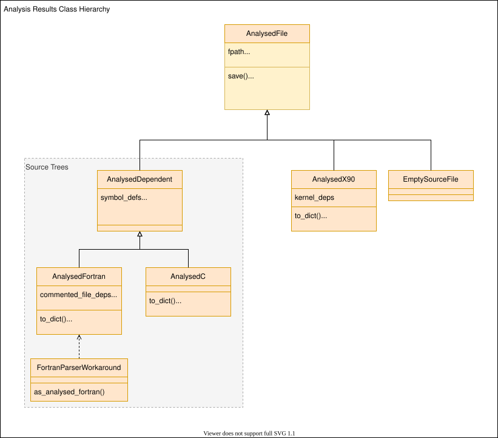

Developer’s guide¶
Interested in developing Fab? Here are some resources to help you on your way.
Install from source¶
The following commands will checkout the latest version of the code and create an editable install.
This lets you edit the code without needing to reinstall fab after every change.
$ git clone https://github.com/metomi/fab.git <fab-folder>
$ pip install -e <fab-folder>
You can install extra features by using [test], [docs], [features] or [dev], as defined in setup.py.
$ pip install -e <fab-folder>[dev]
Source code Analysis¶
The class hierarchy for analysis results can be seen below. See
analyse for a description of the analysis process.
Classes which are involved in source tree analysis contain symbol definitions and dependencies, and the file dependencies into which they are converted.
{kind=link}

Incremental & Prebuilds¶
See Incremental Build and Prebuild for definitions.
Prebuilt artefacts are stored in a flat _prebuild folder underneath the build_output folder. They include a checksum in their filename to distinguish between different builds of the same artefact. All prebuild files are named: <stem>.<hash>.<suffix>, e.g: my_mod.123.o.
Checksums¶
Fab inserts a checksum in the names of prebuild files. This checksum is derived from everything which should trigger a rebuild if changed. Before an artefact is created, Fab will calculate the checksum and search for an existing artefact so it can avoid reprocessing the inputs.
Analysis results¶
Analysis results are stored in files with a .an suffix. The checksum in the filename is solely the hash of the analysed source file. Note: this can change with different preprocessor flags.
Fortran module files¶
When creating a module file from a Fortran source file, the prebuild checksum is created from hashes of:
source file
compiler
compiler version
Fortran object files¶
When creating an object file from a Fortran source file, the prebuild checksum is created from hashes of:
source file
compiler
compiler version
compiler flags
modules on which the source depends
Running the tests¶
You’ll need to install from source, and a full [dev] install to get the testing dependencies.
Unit and system tests¶
From the fab folder, type:
$ pytest tests/unit_tests
$ pytest tests/system_tests
Flake8 and mypy¶
When making a PR, you might want to run all the checks which give us green
ticks. You can see the commands we run in .github/workflows/build.yml.
To run flake8 and mypy, type:
$ flake8 .
$ mypy setup.py source tests
Github Actions¶
Various workflows are maintained by the project.
Testing a PR¶
The github action defined in .github/workflows/build.yml automatically runs
the unit and system tests, plus flake8 and mypy, and adds green ticks to pull
requests.
Build these docs¶
The github action to build the docs is defined in
.github/workflows/build_docs.yml. It is manually triggered and can be run
from any branch in the metomi repo.
You can also run it on your fork to produce a separate build, for viewing work in progress.
Version numbering¶
We use a PEP 440 compliant
semantic versioning, of the form {major}.{minor}.{patch}[{a|b|rc}N]
0.9.5
1.0.0a1
1.0.0a2
1.0.0b1
1.0.0rc1
1.0.0
1.0.1
1.1.0a1
Dev versions are not for release and cover multiple commits. * 1.0.dev0 * … * 1.0.0 * 1.0.dev1 * … * 1.0.1
The version number is defined in source/fab/__init_.py.
Developing at the Met Office¶
There are special notes for developers working at the Met Office.